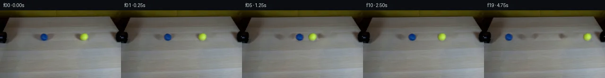

![首帧]()

Round 00
2026-11-04T21:02:58.960633+00:00像素候选变化代码 +156/−0inspection 更新
pixels 65c954561e20db84 · code 4076bea6c72441a2
查看本轮 generate.py 真实 diff
--- previous/generate.py +++ current/generate.py @@ -0,0 +1,156 @@ +from pathlib import Path + +import cv2 +import numpy as np +from PIL import Image, ImageDraw + +import artifact_io + + +ROOT = Path(__file__).resolve().parent +W, H = 256, 144 + + +def smooth_circle_alpha(size, rx, ry): + """Analytic antialiased ellipse, matching the photographed fuzzy ball edges.""" + yy, xx = np.mgrid[:size, :size].astype(np.float32) + c = (size - 1) / 2.0 + radius = np.sqrt(((xx - c) / rx) ** 2 + ((yy - c) / ry) ** 2) + # One and a half pixels of feathering retains the source's optical softness. + return np.clip((1.075 - radius) / 0.16, 0.0, 1.0) + + +def reconstruct_table(source): + """Remove the two starting balls/shadows while keeping the camera plate fixed.""" + bgr = cv2.cvtColor(source, cv2.COLOR_RGB2BGR) + mask = np.zeros((H, W), np.uint8) + # The ellipse includes each sphere, edge halo, and compact contact shadow. + cv2.ellipse(mask, (93, 57), (13, 13), 0, 0, 360, 255, -1) + cv2.ellipse(mask, (178, 57), (14, 14), 0, 0, 360, 255, -1) + clean = cv2.inpaint(bgr, mask, 5.0, cv2.INPAINT_TELEA) + return cv2.cvtColor(clean, cv2.COLOR_BGR2RGB) + + +def source_layer(source, center, size, rx, ry): + """Sample a photographed ball and attach an analytic soft object matte.""" + patch = cv2.getRectSubPix(source, (size, size), center).astype(np.float32) + alpha = smooth_circle_alpha(size, rx, ry).astype(np.float32) + return patch, alpha + + +def add_contact_shadow(frame, cx, strength=0.16, squeeze=1.0): + """Add a small blurred floor shadow locked to the current ball position.""" + matte = np.zeros((H, W), np.float32) + axes = (max(6, int(round(10 * squeeze))), 2) + cv2.ellipse(matte, (int(round(cx + 1.0)), 64), axes, 0, 0, 360, 1.0, -1) + matte = cv2.GaussianBlur(matte, (9, 7), 0) + a = np.clip(matte * strength, 0.0, 0.24)[..., None] + shadow_color = np.array([48.0, 47.0, 42.0], np.float32) + return frame * (1.0 - a) + shadow_color * a + + +def composite_layer(frame, patch, alpha, center, sx=1.0, sy=1.0): + """Place a source ball at a subpixel center, optionally deforming at impact.""" + size = patch.shape[0] + local_center = (size - 1) / 2.0 + matrix = np.array( + [ + [sx, 0.0, center[0] - sx * local_center], + [0.0, sy, center[1] - sy * local_center], + ], + dtype=np.float32, + ) + warped_rgb = cv2.warpAffine( + patch, + matrix, + (W, H), + flags=cv2.INTER_CUBIC, + borderMode=cv2.BORDER_CONSTANT, + borderValue=0, + ) + warped_alpha = cv2.warpAffine( + alpha, + matrix, + (W, H), + flags=cv2.INTER_LINEAR, + borderMode=cv2.BORDER_CONSTANT, + borderValue=0, + ) + a = np.clip(warped_alpha, 0.0, 1.0)[..., None] + return frame * (1.0 - a) + warped_rgb * a + + +def trajectory(frame_index): + """Equal-speed, equal-mass head-on collision with a stationary midpoint.""" + midpoint = (93.0 + 178.0) / 2.0 + speed = 5.75 + if frame_index < 6: … diff truncated; 69 more lines …